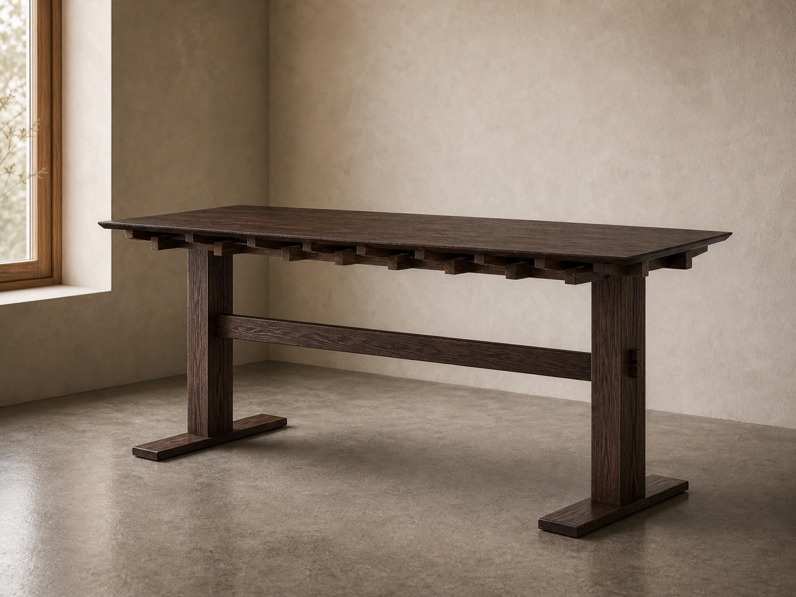
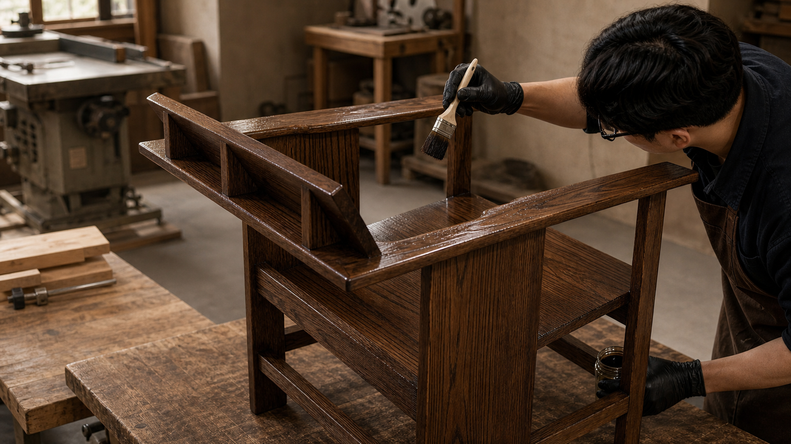
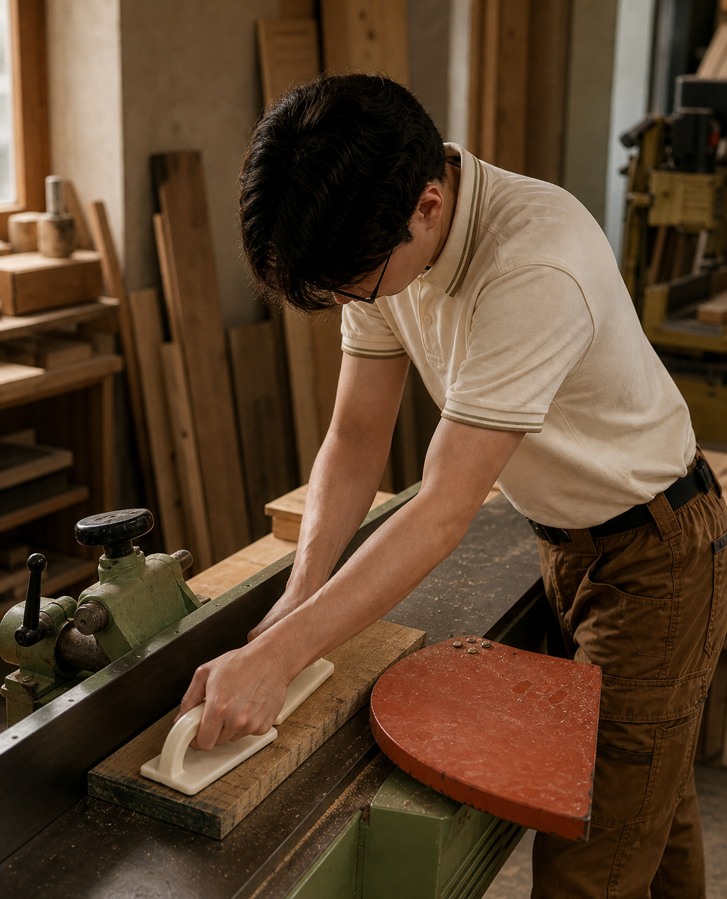

MOKKAN · 목간
목간은 나무와 사람을 가깝게 하는가구를 만듭니다.
나무 본연의 질감과 생활의 비율을 생각하며,일상에 자연스럽게 스며드는 가구를 제작합니다.

Making
나무의 결을 따라손의 시간을 더합니다.
목간의 가구는 도면 위의 선에서 끝나지 않습니다.손이 닿는 모서리, 빛을 받는 마감, 오래 머무는 자세까지 살피며한 점의 가구로 다듬어갑니다.
작업 기록 보기

Maker Profile
목간 Carpenter 강준영
형태는 쓰임을 따르고,가구는 사람과 조화를 이룹니다.
공학 석사 과정을 마친 뒤 여러 일을 거치며, 오래 좋아해온 만드는 일과 가구 구조의 매력에 다시 마음이 닿았습니다. 목간은 원목이 지닌 중후함과 따뜻함, 그리고 구조가 만드는 안정감에서 가구의 본질적인 가치를 찾습니다.
정적인 가구는 움직이는 사람의 생활 안에서 비로소 완성됩니다. 목간은 목재의 아름다움과 사용의 편의성을 함께 살피며, 공간 안에서 자연스럽게 놓이고 오래 쓰일 수 있는 비례를 고민합니다.
제작 과정에서는 고객의 필요를 세심하게 읽고, 재료와 구조가 가장 잘 살아나는 방향을 함께 찾아갑니다. 과한 장식보다 정확한 균형을, 일시적인 인상보다 오래 남는 사용감을 중요하게 생각합니다.
Explore
목간의 철학과 제품, 나무에 관한 기록을 차분히 이어갑니다.